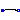
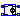
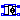
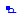
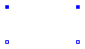

This Package contains the basic components of the SPICE3 models. The first letter of the
name of the component shows the SPICE name, e.g., R_Resistor: R is the SPICE-name of the component
resistor which is used in SPICE-Netlists.
Extends from Modelica.Icons.Package (Icon for standard packages).
| Name | Description |
|---|---|
| Ground node | |
| Ideal linear electrical resistor | |
| Ideal linear electrical capacitor | |
|  L_Inductor | Ideal linear electrical inductor |
|  E_VCV | Linear voltage-controlled voltage source |
| G_VCC | Linear voltage-controlled current source |
| Linear current-controlled voltage source | |
|  F_CCC | Linear current-controlled current source |
 Modelica.Electrical.Spice3.Basic.Ground
Modelica.Electrical.Spice3.Basic.Ground
Ground of an electrical circuit. The potential at the ground node is zero. Every electrical circuit has to contain at least one ground object.
SPICE does not have an element for the ground node (mass). In SPICE netlists the ground is specified by the node number 0. This Modelica SPICE library demands to describe the ground node by this gound element.
| Type | Name | Description |
|---|---|---|
| Pin | p | Ground pin |
model Ground "Ground node"Modelica.Electrical.Analog.Interfaces.Pin p "Ground pin"; equation p.v = 0;end Ground;
 Modelica.Electrical.Spice3.Basic.R_Resistor
Modelica.Electrical.Spice3.Basic.R_Resistor

The linear resistor connects the branch voltage v with the branch current i by i*R = v. The Resistance R is allowed to be positive, zero, or negative.
Extends from Modelica.Electrical.Analog.Interfaces.OnePort (Component with two electrical pins p and n and current i from p to n).
| Type | Name | Default | Description |
|---|---|---|---|
| Resistance | R | Resistance [Ohm] |
| Type | Name | Description |
|---|---|---|
| PositivePin | p | Positive pin (potential p.v > n.v for positive voltage drop v) |
| NegativePin | n | Negative pin |
model R_Resistor "Ideal linear electrical resistor" extends Modelica.Electrical.Analog.Interfaces.OnePort; parameter SI.Resistance R(start=1000) "Resistance"; equation R*i = v;end R_Resistor;
The linear capacitor connects the branch voltage v with the branch current i by i = C * dv/dt. The Capacitance C is allowed to be positive, zero, or negative.
Extends from Modelica.Electrical.Analog.Interfaces.OnePort (Component with two electrical pins p and n and current i from p to n).
| Type | Name | Default | Description |
|---|---|---|---|
| Capacitance | C | Capacitance [F] | |
| Voltage | IC | 0 | Initial value [V] |
| Boolean | UIC | false | Use initial conditions: true, if initial condition is used |
| Type | Name | Description |
|---|---|---|
| PositivePin | p | Positive pin (potential p.v > n.v for positive voltage drop v) |
| NegativePin | n | Negative pin |
model C_Capacitor "Ideal linear electrical capacitor"
extends Modelica.Electrical.Analog.Interfaces.OnePort;
parameter SI.Capacitance C(start=0) "Capacitance";
parameter SI.Voltage IC=0 "Initial value";
parameter Boolean UIC=false
"Use initial conditions: true, if initial condition is used";
protected
SI.Voltage vinternal(start=IC, fixed=UIC);
equation
vinternal = p.v - n.v;
i = C*der(vinternal);
end C_Capacitor;
The linear inductor connects the branch voltage v with the branch current i by v = L * di/dt. The inductance L is allowed to be positive, zero, or negative.
Extends from Modelica.Electrical.Analog.Interfaces.OnePort (Component with two electrical pins p and n and current i from p to n).
| Type | Name | Default | Description |
|---|---|---|---|
| Inductance | L | Inductance [H] | |
| Current | IC | 0 | Initial value [A] |
| Boolean | UIC | false | Use initial conditions: true, if initial condition is used |
| Type | Name | Description |
|---|---|---|
| PositivePin | p | Positive pin (potential p.v > n.v for positive voltage drop v) |
| NegativePin | n | Negative pin |
model L_Inductor "Ideal linear electrical inductor"
extends Modelica.Electrical.Analog.Interfaces.OnePort;
parameter SI.Inductance L(start=0) "Inductance";
parameter SI.Current IC=0 "Initial value";
parameter Boolean UIC=false
"Use initial conditions: true, if initial condition is used";
SI.Current iinternal(start=IC, fixed=UIC);
equation
iinternal = p.i;
L*der(iinternal) = v;
end L_Inductor;

The linear voltage-controlled voltage source is a TwoPort. The right port voltage at pin p2 (=p2.v) is controlled by the left port voltage at pin p1 (=p1.v) via
p2.v = p1.v * gain.
The left port current is zero. Any voltage gain can be chosen.
The corresponding SPICE description
Ename N+ N- NC+ NC- VALUE
is translated to Modelica:
Ename -> Spice3.Basic.E_VCV Ename
(Ename is the name of the Modelica instance)
N+ -> p2.v
N- -> n2.v
NC+ -> p1.v
NC- -> n1.v
VALUE -> gain
Extends from Interfaces.TwoPortControlledSources (Component with two electrical ports, including current).
| Type | Name | Default | Description |
|---|---|---|---|
| Real | gain | Voltage gain |
| Type | Name | Description |
|---|---|---|
| PositivePin | p1 | Positive pin of the controlling port |
| NegativePin | n1 | Negative pin of the controlling port |
| PositivePin | p2 | Positive pin of the controlled port |
| NegativePin | n2 | Negative pin of the controlled port |
model E_VCV "Linear voltage-controlled voltage source" extends Interfaces.TwoPortControlledSources; parameter Real gain(start=0) "Voltage gain"; equation v2 = v1*gain; i1 = 0;end E_VCV;
The linear voltage-controlled current source is a TwoPort. The right port current at pin p2 (=p2.i) is controlled by the left port voltage at pin p1 (p1.v) via
p2.i = p1.v * transConductance.
The left port current is zero. Any transConductance can be chosen.
The corresponding SPICE description
Gname N+ N- NC+ NC- VALUE
is translated to Modelica:
Gname -> Spice3.Basic.G_VCC Gname
(Gname is the name of the Modelica instance)
N+ -> p2.i
N- -> n2.i
NC+ -> p1 .v
NC- -> n1.v
VALUE -> transConductance
Extends from Interfaces.TwoPortControlledSources (Component with two electrical ports, including current).
| Type | Name | Default | Description |
|---|---|---|---|
| Conductance | transConductance | Transconductance [S] |
| Type | Name | Description |
|---|---|---|
| PositivePin | p1 | Positive pin of the controlling port |
| NegativePin | n1 | Negative pin of the controlling port |
| PositivePin | p2 | Positive pin of the controlled port |
| NegativePin | n2 | Negative pin of the controlled port |
model G_VCC "Linear voltage-controlled current source" extends Interfaces.TwoPortControlledSources; parameter SI.Conductance transConductance(start=0) "Transconductance"; equation i2 = v1*transConductance; i1 = 0;end G_VCC;
The linear current-controlled voltage source is a TwoPort. The "right" port voltage at pin 2 (=p2.v) is controlled by the "left" port current at pin p1(=p1.i) via
p2.v = p1.i * transResistance.
The controlling port voltage is zero. Any transResistance can be chosen.
The corresponding SPICE description
Hname N+ N- VNAM VALUE
is translated to Modelica:
Hname -> Spice3.Basic.H_CCV Hname
(Hname is the name of the Modelica instance)
N+ -> p2.v
N- -> n2.v
The voltage source VNAM has the two nodes NV+ and NV-:
VNAM VN+ VN- VALUE_V
The current through VNAM hast to be led through the CCV.
Therefore VNAM has to be disconnected and an additional
node NV_AD has to be added.
NV_AD -> p1.i
NV- -> n1.i
On this way the current, that flows through the voltage source VNAM, flows through the CCV.
VALUE -> transResistance
Extends from Interfaces.TwoPortControlledSources (Component with two electrical ports, including current).
| Type | Name | Default | Description |
|---|---|---|---|
| Resistance | transResistance | Transresistance [Ohm] |
| Type | Name | Description |
|---|---|---|
| PositivePin | p1 | Positive pin of the controlling port |
| NegativePin | n1 | Negative pin of the controlling port |
| PositivePin | p2 | Positive pin of the controlled port |
| NegativePin | n2 | Negative pin of the controlled port |
model H_CCV "Linear current-controlled voltage source" extends Interfaces.TwoPortControlledSources; parameter SI.Resistance transResistance(start=0) "Transresistance"; equation v2 = i1*transResistance; v1 = 0;end H_CCV;
The linear current-controlled current source is a TwoPort. The "right" port current at pin 2 (=p2.i) is controlled by the "left" port current at pin p1(=p1.i) via
p2.i = p1.i * gain.
The controlling port voltage is zero. Any current gain can be chosen.
The corresponding SPICE description
Fname N+ N- VNAM VALUE
is translated to Modelica:
Fname -> Spice3.Basic.F_CCC Fname
(Fname is the name of the Modelica instance)
N+ -> p2.i
N- -> n2.i
The voltage source VNAM has the two nodes NV+ and NV-:
VNAM NV+ NV- VALUE_V
The current through VNAM hast to be led through the CCC.
Therefore VNAM has to be disconnected and an additional
node NV_AD has to be added.
NV_AD -> p1.i
NV- -> n1.i
On this way the current, that flows through the voltage source VNAM, flows through the CCC.
VALUE -> gain
Extends from Interfaces.TwoPortControlledSources (Component with two electrical ports, including current).
| Type | Name | Default | Description |
|---|---|---|---|
| Real | gain | Current gain |
| Type | Name | Description |
|---|---|---|
| PositivePin | p1 | Positive pin of the controlling port |
| NegativePin | n1 | Negative pin of the controlling port |
| PositivePin | p2 | Positive pin of the controlled port |
| NegativePin | n2 | Negative pin of the controlled port |
model F_CCC "Linear current-controlled current source" extends Interfaces.TwoPortControlledSources; parameter Real gain(start=0) "Current gain"; equation i2 = i1*gain; v1 = 0;end F_CCC;